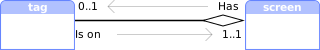
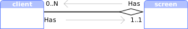
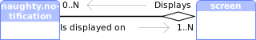

Module: screen
A physical or virtual screen object.
Screen objects can be added and removed over time. To get a callback for all current and future screens, use awful.screen.connect_for_each_screen:
awful.screen.connect_for_each_screen(function(s) -- do something end)
It is also possible loop over all current screens using:
for s in screen do -- do something end
Most basic Awesome objects also have a screen property, see mouse.screen client.screen, wibox.screen and tag.screen.
Core components relationship
| Acquire other objects from a screen | ||
|---|---|---|
| Class | Property | |
| tag | s.tags | |
| tag |  | s.selected_tag |
| tag | s.selected_tags | |
| client | s.clients | |
| client | s.hidden_clients | |
| client |  | s.tiled_clients |
| Acquire a screen from other objects | ||
|---|---|---|
| Class | Property | |
| tag | t.screen | |
| client | c.screen | |
| naughty.notification |  | n.screen |
Info:
- Copyright: 2008-2009 Julien Danjou
-
Originally authored by: Julien Danjou <julien@danjou.info>
(Full contributors list available on our github project)
Constructors
| screen.fake_add (x, y, width, height) | Add a fake screen. |
Static module functions
| screen.instances () -> table | Get the number of instances. | |
| screen.screen () -> function | Iterate over screens. | |
| screen.count () -> number | Get the number of screens. | |
| screen.disconnect_signal (name, func) | Disconnect from a signal. | |
| screen.emit_signal (name, ...) | Emit a signal. | |
| screen.connect_signal (name, func) | Connect to a signal. | |
| awful.screen.getbycoord (x, y) -> nil or number | Return the screen index corresponding to the given (pixel) coordinates. | |
| awful.screen.focus (screen) -> screen | Move the focus to a screen. | |
| awful.screen.focus_bydirection (dir, s) -> screen | Move the focus to a screen in a specific direction. | |
| awful.screen.focus_relative (offset) -> screen | Move the focus to a screen relative to the current one, | |
| awful.screen.preferred (c) -> screen | Get the preferred screen in the context of a client. | |
| awful.screen.focused {[args]} -> nil or screen | Get the focused screen. | |
| awful.screen.connect_for_each_screen (func) | Call a function for each existing and created-in-the-future screen. | |
| awful.screen.disconnect_for_each_screen (func) | Undo the effect of awful.screen.connect_for_each_screen. | |
| awful.screen.set_auto_dpi_enabled (enabled) | Enable the automatic calculation of the screen DPI (experimental). |
Object properties
| geometry | table | The screen coordinates. | Read only |
| index | integer | The internal screen number. | Read only |
| workarea | table | The screen workarea. | Read only |
| tiling_area | table | The area where clients can be tiled. | Read only |
| content | raw_surface | Take a screenshot of the physical screen. | Read only |
| padding | table or number | The screen padding. | |
| outputs | table | A list of outputs for this screen with their size in mm. | Read only |
| clients | table | The list of visible clients for the screen. | |
| hidden_clients | table | Get the list of clients assigned to the screen but not currently visible. | |
| all_clients | table | All clients assigned to the screen. | |
| tiled_clients | table | Tiled clients for the screen. | |
| tags | table | A list of all tags on the screen. | Read only |
| selected_tags | table | A list of all selected tags on the screen. | Read only |
| selected_tag | tag or nil | The first selected tag. | Read only |
| dpi | number | The number of pixels per inch of the screen. | |
| minimum_dpi | number | The lowest density DPI from all of the (physical) outputs. | Read only |
| maximum_dpi | number | The highest density DPI from all of the (physical) outputs. | Read only |
| preferred_dpi | number | The preferred DPI from all of the (physical) outputs. | Read only |
| mm_maximum_size | number | The maximum diagonal size in millimeters. | |
| mm_minimum_size | number | The minimum diagonal size in millimeters. | |
| inch_maximum_size | number | The maximum diagonal size in inches. | |
| inch_minimum_size | number | The minimum diagonal size in inches. |
Object methods
| :fake_remove () | Remove a screen. | |
| :fake_resize (x, y, width, height) | Resize a screen. | |
| :swap (s) | Swap a screen with another one in global screen list. | |
| :get_square_distance (x, y) -> number | Get the square distance between a screen and a point. | |
| :get_next_in_direction (dir) -> screen | Get the next screen in a specific direction. | |
| :get_bounding_geometry {[args]} -> table | Get a placement bounding geometry. | |
| :get_clients (stacked) -> table | Get the list of visible clients for the screen. | |
| :get_all_clients (stacked) -> table | Get all clients assigned to the screen. | |
| :get_tiled_clients (stacked) -> table | Get tiled clients for the screen. | |
| :split (ratios, mode) -> table | Split the screen into multiple screens. | |
| :emit_signal (name, ...) | Emit a signal. | Inherited from gears.object |
| :connect_signal (name, func) | Connect to a signal. | Inherited from gears.object |
| :weak_connect_signal (name, func) | Connect to a signal weakly. | Inherited from gears.object |
Signals
| scanning | AwesomeWM is about to scan for existing screens. | |
| scanned | AwesomeWM is done scanning for screens. | |
| primary_changed | ||
| added | This signal is emitted when a new screen is added to the current setup. | |
| removed | This signal is emitted when a screen is removed from the setup. | |
| list | This signal is emitted when the list of available screens changes. | |
| swapped | When 2 screens are swapped | |
| property::viewports | This signal is emitted when the list of physical screen viewport changes. | |
| request::desktop_decoration | Emitted when a new screen is added. | |
| request::wallpaper | Emitted when a new screen needs a wallpaper. | |
| request::create | When a new (physical) screen area has been added. | |
| request::remove | When a physical monitor viewport has been removed. | |
| request::resize | When a physical viewport resolution has changed or it has been replaced. | |
| tag::history::update | When the tag history changed. |
Request handlers
| awful.screen.create_screen_handler (viewport) | Default handler for request::create. | |
| awful.screen.remove_screen_handler (viewport) | Default handler for request::remove. | |
| awful.screen.resize_screen_handler (viewport) | Default handler for request::resize. |
Deprecated functions
| awful.screen.getdistance_sq (s, x, y) | Get the square distance between a screen and a point. | Deprecated |
| awful.screen.padding (s, padding) | Get or set the screen padding. | Deprecated |
Fields
| screen.primary | screen | The primary screen. | |
| screen.automatic_factory | N/A | If screen objects are created automatically when new viewports are detected. | |
| awful.screen.default_focused_args | N/A | The defaults arguments for awful.screen.focused. |
Constructors
- 🔗 screen.fake_add (x, y, width, height)
-
Add a fake screen.
To vertically split the first screen in 2 equal parts, use:
local geo = screen[1].geometry local new_width = math.ceil(geo.width/2) local new_width2 = geo.width - new_width screen[1]:fake_resize(geo.x, geo.y, new_width, geo.height) screen.fake_add(geo.x + new_width, geo.y, new_width2, geo.height)Both virtual screens will have their own taglist and wibars.
Parameters:
Name Type(s) Description x integer X-coordinate for screen. y integer Y-coordinate for screen. width integer Width for screen. height integer Height for screen. Returns:
-
screen
The new screen.
Static module functions
- 🔗 screen.instances () -> table
-
Get the number of instances.
Returns:
-
table
The number of screen objects alive.
- 🔗 screen.screen () -> function
-
Iterate over screens.
Returns:
-
function
A lua iterator function.
Usage:
for s in screen do print("Oh, wow, we have screen " .. tostring(s)) end
- 🔗 screen.count () -> number
-
Get the number of screens.
Returns:
-
number
The screen count.
- 🔗 screen.disconnect_signal (name, func)
-
Disconnect from a signal.
Parameters:
Name Type(s) Description name string The name of the signal. func function The callback that should be disconnected. - 🔗 screen.emit_signal (name, ...)
-
Emit a signal.
Parameters:
Name Type(s) Description name string The name of the signal. ... Extra arguments for the callback functions. Each connected function receives the object as first argument and then any extra arguments that are given to emit_signal(). - 🔗 screen.connect_signal (name, func)
-
Connect to a signal.
Parameters:
Name Type(s) Description name string The name of the signal. func function The callback to call when the signal is emitted. - 🔗 awful.screen.getbycoord (x, y) -> nil or number
-
Return the screen index corresponding to the given (pixel) coordinates.
The number returned can be used as an index into the global screen table/object.
Parameters:
Name Type(s) Description x number The x coordinate y number The y coordinate Returns:
-
optional number
The screen index
- 🔗 awful.screen.focus (screen) -> screen · 1 permission
-
Move the focus to a screen.
This moves the mouse pointer to the last known position on the new screen, or keeps its position relative to the current focused screen.
Parameters:
Name Type(s) Description screen screen Screen number (defaults / falls back to mouse.screen). Returns:
-
screen
The newly focused screen.
Click to display more Requested actions or permissions:
Class Permission Context Default Description client activate screen.focus granted The most recent focused client for this screen should be re-activated. - 🔗 awful.screen.focus_bydirection (dir, s) -> screen
-
Move the focus to a screen in a specific direction.
This moves the mouse pointer to the last known position on the new screen, or keeps its position relative to the current focused screen.
Parameters:
Name Type(s) Description Default value dir string The direction, can be either “up”, “down”, “left” or “right”. Not applicable s Optional screen Screen. awful.screen.focused()Returns:
-
screen
The next screen.
- 🔗 awful.screen.focus_relative (offset) -> screen
-
Move the focus to a screen relative to the current one, This moves the mouse pointer to the last known position on the new screen,
or keeps its position relative to the current focused screen.
Parameters:
Name Type(s) Description offset int Value to add to the current focused screen index. 1 to focus the next one, -1 to focus the previous one. Returns:
-
screen
The newly focusd screen.
- 🔗 awful.screen.preferred (c) -> screen
-
Get the preferred screen in the context of a client.
This is exactly the same as awful.screen.focused except that it avoids clients being moved when Awesome is restarted. This is used in the default rc.lua to ensure clients get assigned to the focused screen by default.
Parameters:
Name Type(s) Description c client A client. Returns:
-
screen
The preferred screen.
- 🔗 awful.screen.focused {[args]} -> nil or screen
-
Get the focused screen.
It is possible to set awful.screen.default_focused_args to override the default settings.
Parameters:
Note: This static module functions uses named parameters calling convention. It means you call it with{}and omit the parantheses. For example, calling this will all default argument would beawful.screen.focused{}. This is a Lua shortcut syntax equivalent toawful.screen.focused({}).argsis only a placeholder name for the "lone table argument" used in named parameters calls.Name Type(s) Description Default value args Optional table Undefined client Optional boolean Use the client screen instead of the mouse screen. falsemouse Optional boolean Use the mouse screen trueReturns:
-
optional screen
The focused screen object, or
nilin case no screen is present currently. - 🔗 awful.screen.connect_for_each_screen (func)
-
Call a function for each existing and created-in-the-future screen.
Parameters:
Name Type(s) Description func table The function to call. screen screen The screen. - 🔗 awful.screen.disconnect_for_each_screen (func)
-
Undo the effect of awful.screen.connect_for_each_screen.
Parameters:
Name Type(s) Description func function The function that should no longer be called. - 🔗 awful.screen.set_auto_dpi_enabled (enabled)
-
Enable the automatic calculation of the screen DPI (experimental).
This will cause many elements such as the font and some widgets to be scaled so they look the same (physical) size on different devices with different pixel density.
It is calculated using the information provided from
xrandr.When enabled, the theme and configuration must avoid using pixel sizes for different elements as this will cause misalignment or hidden content on some devices.
Note that it has to be called early in rc.lua and requires restarting awesome to take effect. It is disabled by default and changes introduced in minor releases of Awesome may slightly break the behavior as more components gain support for HiDPI.
When disabled the DPI is acquired from the
Xft.dpiX resource (xrdb), defaulting to 96.Parameters:
Name Type(s) Description enabled boolean Enable or disable automatic DPI support.
Object properties
- 🔗 geometry table · 1 signal · read only
-
The screen coordinates.
The returned table contains the
x,y,widthandheightkeys.Constraints:
Default value : Either from xrandror fromfake_resize.Table keys: x (integer) : The horizontal position. y (integer) : The vertical position. width (integer) : The width. height (integer) : The height. Unit : pixel
Click to display more Emit signals:
- 🔗 index integer · read only
-
The internal screen number.
- The indeces are a continuous sequence from 1 to
screen.count(). - It is NOT related to the actual screen position relative to each other.
- 1 is NOT necessarily the primary screen.
- When screens are added and removed indices CAN change.
If you really want to keep an array of screens you should use something along:
local myscreens = setmetatable({}. {__mode="k"}) myscreens[ screen[1] ] = "mydata"But it might be a better option to simply store the data directly in the screen object as:
screen[1].mydata = "mydata"Remember that screens are also objects, so if you only want to store a simple property, you can do it directly:
screen[1].answer = 42Constraints:
Default value : The index is not derived from the geometry. It may or may not be from xrandr. It isn’t a good idea to rely on indices.Negative allowed : false See also:
screen A physical or virtual screen object. module - The indeces are a continuous sequence from 1 to
- 🔗 workarea table · 1 signal · read only
-
The screen workarea.
The workarea is a subsection of the screen where clients can be placed. It usually excludes the toolbars (see awful.wibar) and dockable clients (see client.dockable) like WindowMaker DockAPP.
It can be modified be altering the wibox or client struts.
-- With a padding, the tiled clients wont use 20px at the top and bottom -- and 40px on the left and right. screen[1].padding = { left = 40, right = 40, top = 20, bottom = 20, } -- This will shift the workarea by 24px at the top. local wibar = awful.wibar { position = "top", height = 24, }Constraints:
Default value : Based on geometrywith the awful.wibar and docks area substracted.Table keys: x (integer) : The horizontal position y (integer) : The vertical position width (integer) : The width height (integer) : The height Unit : pixel See also:
client.struts Return client struts (reserved space at the edge of the screen). (client) object methods
Click to display more Emit signals:
- 🔗 tiling_area table · read only
-
The area where clients can be tiled.
This property holds the area where clients can be tiled. Use the padding property, wibox.struts and client.struts to modify this area.
Constraints:
Default value : This is the workareasubstracted with thepaddingarea.Table keys: x (number) y (number) width (number) height (number) Unit : pixel See also:
padding The screen padding. object properties get_bounding_geometry Get a placement bounding geometry. object methods - 🔗 content raw_surface · read only
-
Take a screenshot of the physical screen.
Reading this property returns a screenshot of the physical (Xinerama) screen as a cairo surface.
Use
gears.surface(c.content)to convert the raw content into a static image.Constraints:
Default value : The client raw pixels at the time the property is called. If there is no compositing manager running, it might be black. See also:
gears.surface Utilities to integrate and manipulate Cairo drawing surfaces. module - 🔗 padding table or number · 1 signal · 1 theme variable
-
The screen padding.
This adds a “buffer” section on each side of the screen.
-- With a padding, the tiled clients wont use 20px at the top and bottom -- and 40px on the left and right. screen[1].padding = { left = 40, right = 40, top = 20, bottom = 20, }Constraints:
Default value : 0Type description: number : A single value for each sides. table: : A different value for each sides. left (integer) : The padding on the left. right (integer) : The padding on the right. top (integer) : The padding on the top. bottom (integer) : The padding on the bottom. Unit : pixel Negative allowed : false
Click to display more Emit signals:
property::paddingWhen the padding value changes.
Consumed theme variables:
Theme variable Usage beautiful.maximized_honor_paddingHonor the screen padding when maximizing. - 🔗 outputs table · 1 signal · read only
-
A list of outputs for this screen with their size in mm.
Please note that the table content may vary. In some case, it might also be empty.
An easy way to check if a screen is the laptop screen is usually:
if s.outputs["LVDS-1"] then -- do something endConstraints:
Default value : This may or may not be populated if the screen are based on an actual physical screen. For fake screen, this property content is undefined. Table content: : A key-value table with the output name as key and a table of metadata as value. mm_width(integer): The screen physical width. mm_height(integer): The screen physical height. name(string): The output name. viewport_id(string): The identifier of the viewport this output corresponds to.
Click to display more Emit signals:
- 🔗 clients table
-
The list of visible clients for the screen.
Minimized and unmanaged clients are not included in this list as they are technically not on the screen.
The clients on tags that are currently not visible are not part of this list.
Clients are returned using the stacking order (from top to bottom). See get_clients if you want them in the order used in the tasklist by default.
Constraints:
Default value : {}Table content : A list of client objects. Valid values : The clients list, ordered from top to bottom. See also:
all_clients All clients assigned to the screen. object properties hidden_clients Get the list of clients assigned to the screen but not currently visible. object properties client.get Get all clients into a table. (client) static module functions - 🔗 hidden_clients table
-
Get the list of clients assigned to the screen but not currently visible.
This includes minimized clients and clients on hidden tags.
Constraints:
Default value : {}Table content : A list of client objects. Valid values : The clients list, ordered from top to bottom. See also:
clients The list of visible clients for the screen. object properties all_clients All clients assigned to the screen. object properties client.get Get all clients into a table. (client) static module functions - 🔗 all_clients table
-
All clients assigned to the screen.
Constraints:
Default value : {}Table content : A list of client objects. Valid values : The clients list, ordered from top to bottom. See also:
clients The list of visible clients for the screen. object properties hidden_clients Get the list of clients assigned to the screen but not currently visible. object properties client.get Get all clients into a table. (client) static module functions - 🔗 tiled_clients table
-
Tiled clients for the screen.
Same as clients, but excluding:
- fullscreen clients
- maximized clients
- floating clients
Constraints:
Default value : {}Table content : A list of client objects. Valid values : The clients list, ordered from top to bottom. - 🔗 tags table · read only
-
A list of all tags on the screen.
Use tag.screen,
awful.tag.add,awful.tag.newort:delete()to alter this list.Constraints:
Default value : {}Table content : A table with all available tags. - 🔗 selected_tags table · read only
-
A list of all selected tags on the screen.
Constraints:
Default value : {}Table content : A table with all selected tags. See also:
tag.selected True if the tag is selected to be viewed. (tag) object properties client.to_selected_tags Find suitable tags for newly created clients. (client) object methods - 🔗 selected_tag tag or nil · read only
-
The first selected tag.
Constraints:
Default value : nilSee also:
tag.selected True if the tag is selected to be viewed. (tag) object properties selected_tags A list of all selected tags on the screen. object properties - 🔗 dpi number
-
The number of pixels per inch of the screen.
The default DPI comes from the X11 server. In most case, it will be 96. If
autodpiis set totrueon the screen, it will use the least dense dpi from the screen outputs. Most of the time, screens only have a single output, however it will have two (or more) when “clone mode” is used (eg, when a screen is duplicated on a projector).Constraints:
Default value : 96Unit : pixel_per_inch Negative allowed : false - 🔗 minimum_dpi number · read only
-
The lowest density DPI from all of the (physical) outputs.
Constraints:
Default value : This is extracted from outputs.Unit : pixel_per_inch Negative allowed : false - 🔗 maximum_dpi number · read only
-
The highest density DPI from all of the (physical) outputs.
Constraints:
Default value : This is extracted from outputs.Unit : pixel_per_inch Negative allowed : false - 🔗 preferred_dpi number · read only
-
The preferred DPI from all of the (physical) outputs.
This is computed by normalizing all output to fill the area, then picking the lowest of the resulting virtual DPIs.
Constraints:
Default value : This is extracted from outputs.Negative allowed : false - 🔗 mm_maximum_size number
-
The maximum diagonal size in millimeters.
Constraints:
Default value : This is extracted from outputs.Unit : millimeter Negative allowed : false - 🔗 mm_minimum_size number
-
The minimum diagonal size in millimeters.
Constraints:
Default value : This is extracted from outputs.Unit : millimeter Negative allowed : false - 🔗 inch_maximum_size number
-
The maximum diagonal size in inches.
Constraints:
Default value : This is extracted from outputs.Unit : inch Negative allowed : false - 🔗 inch_minimum_size number
-
The minimum diagonal size in inches.
Constraints:
Default value : This is extracted from outputs.Unit : inch Negative allowed : false
Object methods
- 🔗 :fake_remove ()
-
Remove a screen.
Usage:
screen[2]:fake_remove() - 🔗 :fake_resize (x, y, width, height)
-
Resize a screen.
Calling this will resize the screen even if it no longer matches the viewport size.
Parameters:
Name Type(s) Description x integer The new X-coordinate for screen. y integer The new Y-coordinate for screen. width integer The new width for screen. height integer The new height for screen. See also:
split Split the screen into multiple screens. object methods geometry The screen coordinates. object properties Usage:
screen[1]:fake_resize(100, 0, 1024, 768)
- 🔗 :swap (s)
-
Swap a screen with another one in global screen list.
Parameters:
Name Type(s) Description s client A screen to swap with. Usage:
screen[2]:swap(screen[1])
- 🔗 :get_square_distance (x, y) -> number
-
Get the square distance between a screen and a point.
Parameters:
Name Type(s) Description x number X coordinate of point y number Y coordinate of point Returns:
-
number
The squared distance of the screen to the provided point.
- 🔗 :get_next_in_direction (dir) -> screen
-
Get the next screen in a specific direction.
This gets the next screen relative to this one in the specified direction.
Parameters:
Name Type(s) Description dir string The direction, can be either “up”, “down”, “left” or “right”. Returns:
-
screen
The next screen.
- 🔗 :get_bounding_geometry {[args]} -> table
-
Get a placement bounding geometry.
This method computes the different variants of the “usable” screen geometry.
Parameters:
Note: This object methods uses named parameters calling convention. It means you call it with{}and omit the parantheses. For example, calling this will all default argument would beget_bounding_geometry{}. This is a Lua shortcut syntax equivalent toget_bounding_geometry({}).argsis only a placeholder name for the "lone table argument" used in named parameters calls.Name Type(s) Description Default value args Optional table The arguments {}honor_padding Optional boolean Whether to honor the screen’s padding. falsehonor_workarea Optional boolean Whether to honor the screen’s workarea. falsemargins Optional int or table Apply some margins on the output. This can either be a number or a table with left, right, top and bottom keys. Undefined tag Optional tag Use this tag’s screen. Undefined parent Optional drawable A parent drawable to use as base geometry. Undefined bounding_rect Optional table A bounding rectangle. This parameter is incompatible with honor_workarea.Undefined Returns:
-
table
A table with x, y, width and height.
Usage:
local geo = screen:get_bounding_geometry { honor_padding = true, honor_workarea = true, margins = { left = 20, }, }
- 🔗 :get_clients (stacked) -> table
-
Get the list of visible clients for the screen.
This is used by screen.clients internally (with
stacked=true).Parameters:
Name Type(s) Description Default value stacked Optional boolean Use stacking order? (top to bottom) trueReturns:
-
table
The clients list.
- 🔗 :get_all_clients (stacked) -> table
-
Get all clients assigned to the screen.
This is used by all_clients internally (with
stacked=true).Parameters:
Name Type(s) Description Default value stacked Optional boolean Use stacking order? (top to bottom) trueReturns:
-
table
The clients list.
- 🔗 :get_tiled_clients (stacked) -> table
-
Get tiled clients for the screen.
This is used by
tiles_clientsinternally (withstacked=true).Parameters:
Name Type(s) Description Default value stacked Optional boolean Use stacking order? (top to bottom) trueReturns:
-
table
The clients list.
- 🔗 :split (ratios, mode) -> table
-
Split the screen into multiple screens.
This is useful to turn ultrawide monitors into something more useful without fancy client layouts:
screen[1]:split({1/5, 3/5, 1/5})It can also be used to turn a vertical “side” screen into 2 smaller screens:
screen[1]:split()Parameters:
Name Type(s) Description Default value ratios Optional table The different ratios to split into. If none is provided, it is split in half. {50﹐50}mode Optional string Either “vertical” or “horizontal”. If none is specified, it will split along the longest axis. Undefined Returns:
-
table
A table with the screen objects. The first value is the
original screen object (
s) and the following one(s) are the new screen objects. The values are ordered from left to right or top to bottom depending on the value ofmode. - 🔗 :emit_signal (name, ...) · Inherited from gears.object
-
Emit a signal.
Parameters:
Name Type(s) Description name string The name of the signal. ... Extra arguments for the callback functions. Each connected function receives the object as first argument and then any extra arguments that are given to emit_signal(). - 🔗 :connect_signal (name, func) · Inherited from gears.object
-
Connect to a signal.
Parameters:
Name Type(s) Description name string The name of the signal. func function The callback to call when the signal is emitted. - 🔗 :weak_connect_signal (name, func) · Inherited from gears.object
-
Connect to a signal weakly.
This allows the callback function to be garbage collected and automatically disconnects the signal when that happens.
Warning: Only use this function if you really, really, really know what you are doing.
Parameters:
Name Type(s) Description name string The name of the signal. func function The callback to call when the signal is emitted.
Signals
- 🔗 scanning
-
AwesomeWM is about to scan for existing screens.
Connect to this signal when code needs to be executed after the Lua context is initialized and modules are loaded, but before screens are added.
To manage screens manually, set
screen.automatic_factory = falseand connect to the property::viewports signal. It is then possible to use screen.fake_add to create virtual screens. Be careful when using this, when done incorrectly, no screens will be created. Using Awesome with zero screens is not supported.See also:
property::viewports This signal is emitted when the list of physical screen viewport changes. signals screen.fake_add Add a fake screen. constructors - 🔗 scanned
-
AwesomeWM is done scanning for screens.
Connect to this signal to execute code after the screens have been created, but before the clients are added. This signal can also be used to split physical screens into multiple virtual screens before the clients (and their rules) are executed.
Note that if no screens exist at this point, the fallback code will be triggered and the default (detected) screens will be added.
See also:
screen.fake_resize Resize a screen. object methods screen.fake_add Add a fake screen. constructors - 🔗 primary_changed
- 🔗 added
- This signal is emitted when a new screen is added to the current setup.
- 🔗 removed · 1 permission
-
This signal is emitted when a screen is removed from the setup.
Click to display more Requested actions or permissions:
Class Permission Context Default Description tag screen removed granted When a screen is removed, request::screenis called on all screen tags to try to relocate them. - 🔗 list
- This signal is emitted when the list of available screens changes.
- 🔗 swapped
-
When 2 screens are swapped
Arguments:
Name Type(s) Description screen screen The other screen is_source boolean If self is the source or the destination of the swap - 🔗 property::viewports
-
This signal is emitted when the list of physical screen viewport changes.
Each viewport in the list corresponds to a physical screen rectangle, which is not the viewports property of the screen objects.
Each entry in the viewports entry has the following keys:
- geometry (table): A table with an
x,y,widthandheightkeys. - outputs (table): All outputs sharing this viewport.
- maximum_dpi (number): The DPI of the most dense output.
- minimum_dpi (number): The DPI of the least dense output.
- preferred_dpi (number): The optimal DPI.
Arguments:
Name Type(s) Description viewports table A table containing all physical viewports. See also:
automatic_factory If screen objects are created automatically when new viewports are detected. fields - geometry (table): A table with an
- 🔗 request::desktop_decoration · 1 permission
-
Emitted when a new screen is added.
The handler(s) of this signal are responsible of adding elements such as bars, docks or other elements to a screen. The signal is emitted when a screen is added, including during startup.
The only default implementation is the one provided by rc.lua.
Arguments:
Name Type(s) Description context string The context.
Click to display more Requested actions or permissions:
Class Permission Context Default Description screen wallpaper added granted When the decorations needs to be added to a new screen. - 🔗 request::wallpaper · 3 permissions
-
Emitted when a new screen needs a wallpaper.
The handler(s) of this signal are responsible to set the wallpaper. The signal is emitted when a screen is added (including at startup), when its DPI changes or when its geometry changes.
The only default implementation is the one provided by rc.lua.
Arguments:
Name Type(s) Description context string The context.
Click to display more Requested actions or permissions:
Class Permission Context Default Description screen wallpaper added granted When the wallpaper needs to be added to a new screen. screen wallpaper geometry granted When the wallpaper needs to be updated because the resolution changed. screen wallpaper dpi granted When the wallpaper needs to be updated because the DPI changed. - 🔗 request::create
-
When a new (physical) screen area has been added.
Important: This only exists when Awesome is started with
–screen off. Please also note that this doesn’t mean it will appear when a screen is physically plugged. Depending on the configuration a tool likearandror thexrandrcommand is needed.The default handler will create a screen that fills the area.
To disconnect the default handler, use:
screen.disconnect_signal( "request::create", awful.screen.create_screen_handler )Arguments:
Name Type(s) Description viewport table geometry table A table with x,y,widthandheightkeys.outputs table A table with the monitor name and possibly the mm_widthandmm_heightvalues if they are available.id number An identifier for this viewport (by pixel resolution). It will not change when outputs are modified, but will change when the resolution changes. Note that if it fully disappear, the next time an viewport with the same resolution appears, it will have a different id.minimum_dpi number The least dense DPI. maximum_dpi number The most dense DPI. preferred_dpi number The relative least dense DPI. args table context string Why was this signal sent. See also:
outputs A list of outputs for this screen with their size in mm. object properties awful.screen.create_screen_handler Default handler for request::create. request handlers
Click to display more Request handler:
- awful.screen.create_screen_handler Default handler for `request::create`.
- 🔗 request::remove
-
When a physical monitor viewport has been removed.
Important: This only exists when Awesome is started with
–screen off.If you replace the default handler, it is up to you to find the screen(s) associated with this viewport.
To disconnect the default handler, use:
screen.disconnect_signal( "request::remove", awful.screen.remove_screen_handler )Arguments:
Name Type(s) Description viewport table geometry table A table with x,y,widthandheightkeys.outputs table A table with the monitor name and possibly the mm_widthandmm_heightvalues if they are available.id number An identifier for this viewport (by pixel resolution). It will not change when outputs are modified, but will change when the resolution changes. Note that if it fully disappear, the next time an viewport with the same resolution appears, it will have a different id.minimum_dpi number The least dense DPI. maximum_dpi number The most dense DPI. preferred_dpi number The relative least dense DPI. args table context string Why was this signal sent. See also:
awful.screen.remove_screen_handler Default handler for request::remove. request handlers
Click to display more Request handler:
- awful.screen.remove_screen_handler Default handler for `request::remove`.
- 🔗 request::resize
-
When a physical viewport resolution has changed or it has been replaced.
Important: This only exists when Awesome is started with
–screen off.Note that given the viewports are not the same, the
idwon’t be the same. Also note that if multiple new viewports fit within a single “old” viewport, the resized screen will be the one with the largest total overlapping viewport (intersection.width*intersection.height), regardless of the outputs names.To disconnect the default handler, use:
screen.disconnect_signal( "request::resize", awful.screen.resize_screen_handler )Arguments:
Name Type(s) Description old_viewport table geometry table A table with x,y,widthandheightkeys.outputs table A table with the monitor name and possibly the mm_widthandmm_heightvalues if they are available.id number An identifier for this viewport (by pixel resolution). It will not change when outputs are modified, but will change when the resolution changes. Note that if it fully disappear, the next time an viewport with the same resolution appears, it will have a different id.minimum_dpi number The least dense DPI. maximum_dpi number The most dense DPI. preferred_dpi number The relative least dense DPI. new_viewport table geometry table A table with x,y,widthandheightkeys.outputs table A table with the monitor name and possibly the mm_widthandmm_heightvalues if they are available.id number An identifier for this viewport (by pixel resolution). It will not change when outputs are modified, but will change when the resolution changes. Note that if it fully disappear, the next time an viewport with the same resolution appears, it will have a different id.minimum_dpi number The least dense DPI. maximum_dpi number The most dense DPI. preferred_dpi number The relative least dense DPI. args table context string Why was this signal sent. See also:
awful.screen.resize_screen_handler Default handler for request::resize. request handlers
Click to display more Request handler:
- awful.screen.resize_screen_handler Default handler for `request::resize`.
- 🔗 tag::history::update
- When the tag history changed.
Request handlers
- 🔗 awful.screen.create_screen_handler (viewport)
-
Default handler for request::create.
Important: This only exists when Awesome is started with
–screen off.A simplified implementation looks like:
function(viewport --[[, args]]) local geo = viewport.geometry local s = screen.fake_add(geo.x, geo.y, geo.width, geo.height) s:emit_signal("request::desktop_decoration") s:emit_signal("request::wallpaper") endIf you implement this by hand, you must also implement handler for the request::remove and request::resize.
Arguments:
Name Type(s) Description viewport table See also:
request::create When a new (physical) screen area has been added. signals
Click to display more Source signal:
request::create from the screen module. This code allows to disconnect this handler and implement your own:
-- Disconnect the original handler. screen.disconnect_signal('request::create', awful.screen.create_screen_handler) -- Connect a custom handler. screen.connect_signal('request::create', function(viewport, args) -- code here end)
- 🔗 awful.screen.remove_screen_handler (viewport)
-
Default handler for request::remove.
Important: This only exists when Awesome is started with
–screen off.A simplified version of the logic is:
function (viewport --[[, args]]) local geo = viewport.geometry for s in screen do if gears.geometry.rectangle.are_equal(geo, s.geometry) then s:fake_remove() return end end endArguments:
Name Type(s) Description viewport table See also:
request::remove When a physical monitor viewport has been removed. signals
Click to display more Source signal:
request::remove from the screen module. This code allows to disconnect this handler and implement your own:
-- Disconnect the original handler. screen.disconnect_signal('request::remove', awful.screen.remove_screen_handler) -- Connect a custom handler. screen.connect_signal('request::remove', function(viewport, args) -- code here end)
- 🔗 awful.screen.resize_screen_handler (viewport)
-
Default handler for request::resize.
Important: This only exists when Awesome is started with
–screen off.A simplified version of the logic is:
function (old_viewport, new_viewport --[[, args]]) local old_geo, new_geo = old_viewport.geometry, new_viewport.geometry for s in screen do local sgeo = new_viewport.geometry if gears.geometry.rectangle.are_equal(old_geo, s.geometry) then s:fake_resize( sgeo.x, sgeo.y, sgeo.width, sgeo.height ) end end endArguments:
Name Type(s) Description viewport table See also:
request::resize When a physical viewport resolution has changed or it has been replaced. signals
Click to display more Source signal:
request::resize from the screen module. This code allows to disconnect this handler and implement your own:
-- Disconnect the original handler. screen.disconnect_signal('request::resize', awful.screen.resize_screen_handler) -- Connect a custom handler. screen.connect_signal('request::resize', function(old_viewport, new_viewport, args) -- code here end)
Deprecated functions
- 🔗 awful.screen.getdistance_sq (s, x, y)
-
Get the square distance between a screen and a point.
Parameters:
Name Type(s) Description s screen Screen x integer X coordinate of point y integer Y coordinate of point Returns:
-
number
The squared distance of the screen to the provided point.
See also:
screen.get_square_distance Get the square distance between a screen and a point. object methods - 🔗 awful.screen.padding (s, padding)
-
Get or set the screen padding.
Parameters:
Name Type(s) Description Default value s screen The screen object to change the padding on. Not applicable padding Optional table, integer or nil The padding, a table with ‘top’, ‘left’, ‘right’ and/or ‘bottom’ or a number value to apply set the same padding on all sides. Can be nil if you only want to retrieve padding nilReturns:
-
table
A table with left, right, top and bottom number values.
See also:
padding The screen padding. object properties
Fields
- 🔗 screen.primary screen
- The primary screen.
- 🔗 screen.automatic_factory N/A
-
If screen objects are created automatically when new viewports are detected.
Be very, very careful when setting this to false. You might end up with no screens. This is not supported. Always connect to the scanned signal to make sure to create a fallback screen if none were created.
See also:
property::viewports This signal is emitted when the list of physical screen viewport changes. signals - 🔗 awful.screen.default_focused_args N/A
- The defaults arguments for awful.screen.focused.